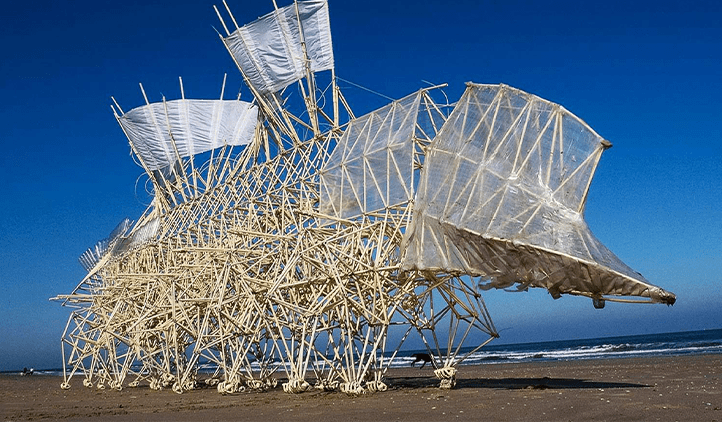

Esculturas
Están las esculturas móviles, las participativas, las accionadas por sistemas electromagnéticos, las que integran la iluminación y las integradas al ambiente.


Las primeras manifestaciones de arte cinético se dan en los años 1910. Después de 1950 tuvo lugar su avance y estuvo de moda desde la mitad de los 60 hasta mediados de los 70. Pero sigue perdurando.
Tuvo su origen en París hacia la segunda mitad del siglo XX.
En Europa se describió la filosofía creativa cinética, en América se lo personificó, en Rusia se creó la primera escultura móvil y en Suecia se implementó desde una perspectiva matemática. Expandido por todo el mundo, creándose esculturas en las playas de Holanda, obras en Bretaña o esculturas en Washington.
Las ramas del arte que mas se destacaron fueron:
Están las esculturas móviles, las participativas, las accionadas por sistemas electromagnéticos, las que integran la iluminación y las integradas al ambiente.
Son pinturas de ilusión óptica u obras estables, que al ser fijas el espectador tiene que rodearlas para percibir el movimiento.
Pueden ser estables, móviles o penetrables. Las partes móviles generalmente son impulsadas por el viento, un motor o el observador.